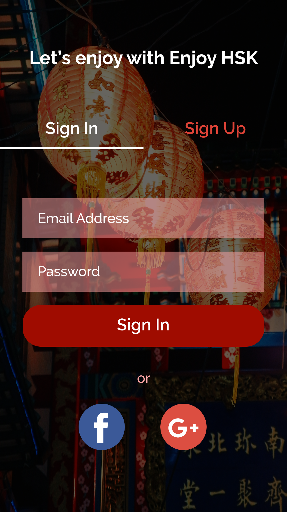

Daily UI - Sign In Page
1. Overview
- My Role: UI Designer (High-fidelity wireframing)
- Timeline: 2nd October 2018
- Tools: Adobe Illustrator
As a UI/UX Designer, I have mostly used Figma for the design projects I have conducted so far. However, I concluded I would better practice using Adobe Illustrator to improve my overall tool proficiency. Therefore, I designed the sign in screen of Enjoy HSK, a vocabulary learning application that I designed when I learned UX fundamentals at CareerFoundry.
2. High-Fidelity Wireframe
Considering the application is targeting the users who are preparing for Chinese language examination, I used red colour scheme and also used background image to strenghten the theme of Enjoy HSK. Also, I let users switch to the sign up screen if it is the first time to use Enjoy HSK, just by clicking 'Sign Up' button next to the sign in page.
Meanwhile, for the sign in screens I made so far (e.g. VELA and FitJet), I allowed 2 ways to sign in - using an email address or a Google account. However, in this project, I gave one more option to sign in - using a Facebook account. I did not add texts like 'Sign in with Facebook,' but instead, I only displayed the icons of each social media (Google and Facebook), letting users easily find the icons and click one of those when they would like to sign in using their social media accounts.
3. Lesson from the project
After I changed my main design tool from Adobe Illustrator to Figma, I have not had many chances to practice Illustrator. However, through designing the sign in screen, I could practice how to control each asset and feature within the tool. By continuing daily UI challenges, I would like to improve my skill set in Adobe Illustrator in the future, as well, broadening the scope of tools I can use more proficiently.